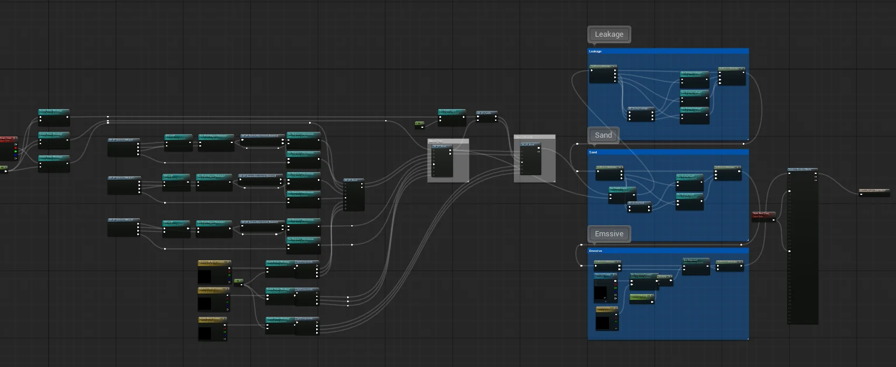
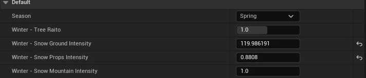
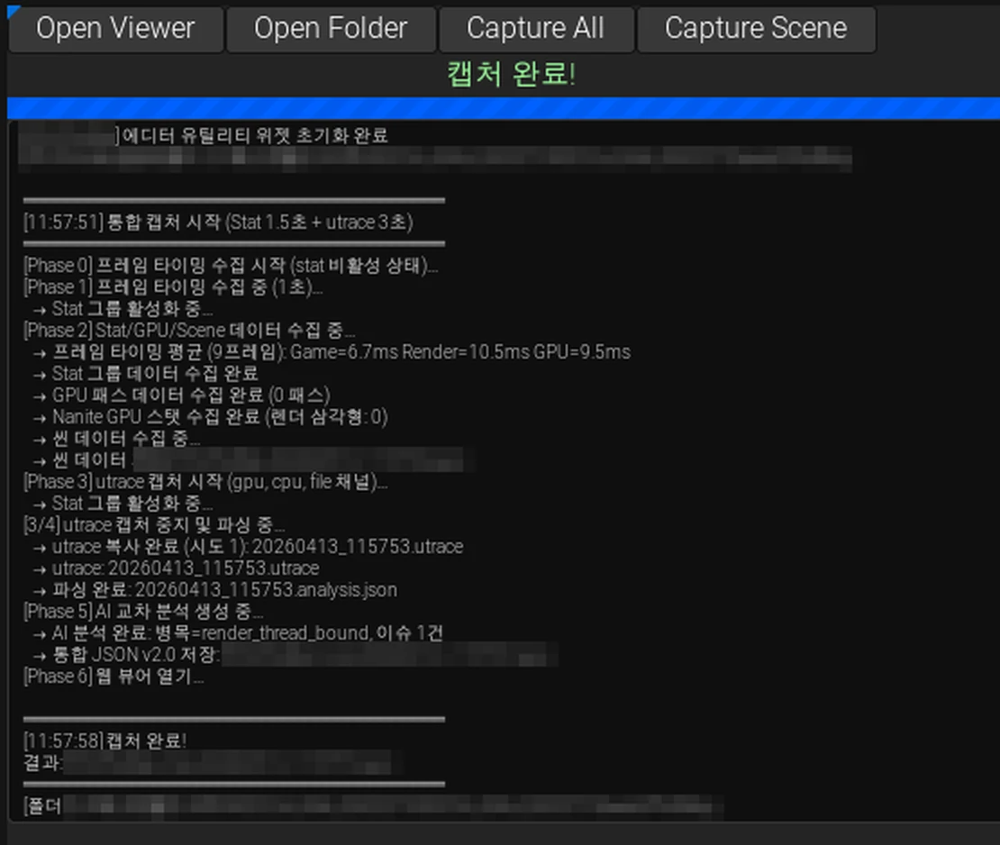

대전스튜디오에 새로 조성된 LED 스튜디오에서 촬영할 에셋과 Unreal Engine 환경을 제작하면서 여러 환경에 사용할 머티리얼 시스템을 함께 만들었다. Pixera로 송출하는 과정에서는 성능을 확인할 도구가 필요해 프로파일링 도구를 제작하고 씬 최적화까지 진행했다.
환경 제작#
경복궁과 국회의사당 환경을 맡아 필요한 모델링을 진행했고 궁궐에는 기와와 건물처럼 반복되는 구성이 많아 PCG로 배치 규칙을 정해 기와와 건물 레이아웃을 구성했다.
경복궁에는 경회루와 근정전 등 약 10개의 스팟이 있어 담당자별로 구역을 나눠 작업했고 내가 맡은 구역에는 직접 만든 머티리얼 시스템을 적용했다.


같은 환경에서도 시간대를 바꿔 촬영할 수 있도록 낮과 석양 그리고 밤 설정을 구성했고 아래 이미지는 왼쪽부터 그 순서대로 정리했다.


범용 머티리얼 시스템#
환경을 제작하다 보니 흙과 모래, 이끼처럼 여러 곳에 반복해서 사용하는 표면 효과가 있었다. 필요한 효과를 조합해서 쓸 수 있도록 각각을 Material Function으로 나누고 플러그인으로 묶어 사용했다.


표면에 따라 일반 UV와 World-Aligned 투영 중에서 맞는 방식을 선택할 수 있도록 했고 작업자가 직접 조절할 레이어별 색상과 러프니스는 밖으로 꺼내두었다. 내부 블렌딩 연산과 노이즈 파라미터는 숨겨두고 계절과 날씨는 MPC로 조절하도록 구성했다.
계절과 눈 관련 값은 마스터 컨트롤러 액터에서 조절할 수 있도록 연결했다.


경복궁 환경에서는 직접 설계한 마스터 10종을 인스턴스 1,049개와 고유 메시 799종에 적용했다. 포트폴리오에 기록한 이 수치는 내가 설계한 마스터의 사용 범위이며 씬 전체의 마스터 수를 뜻하지는 않는다.
Pixera 송출과 프로파일링 도구#
기존 ICVFX 환경에서는 프레임이 잘 나왔는데 Pixera로 송출하는 구성에서는 프레임이 크게 떨어졌다. 작업 시간이 부족한 상황에서 반복 측정에 드는 시간을 줄이고 싶어 현재 뷰의 성능 데이터와 씬 구조를 함께 추출하는 Editor Utility를 만들었다.


Insights trace와 stat rhi, stat gpu, stat scenerendering 값 그리고 씬 구조를 수집해 분석 템플릿과 함께 리뷰 도구로 전달했다. LLM 분석 템플릿으로 만든 보고서는 사람이 실제 씬 조건과 대조한 뒤 수정할 부분을 정하는 데 사용했고 도구의 캡처 기록은 단일 PC를 기준으로 남겼다.
작업할 때는 파트 4명 중 2명이 도구를 직접 사용하고 나머지 2명은 정리된 리포트를 받아 수정했으며 하루에 측정과 수정 그리고 재측정을 8회 진행한 내용을 경력기술서에 기록했다.
씬 최적화와 결과#
로케이션 5곳 중 3곳은 직접 제작했고 외주 데이터를 사용한 2곳까지 포함해 전체 최적화를 맡았다. 촬영 뷰가 로케이션마다 10개씩 총 50개로 정해져 있어 수집한 데이터를 바탕으로 해당 뷰에서 비용이 큰 부분부터 줄여나갔다.
작업 기준과 조치#
stat과 Unreal Insights를 비교하며 가시성 계산과 레이트레이싱 인스턴스를 확인했고 경복궁의 식생 바람과 바닥 표현, 공항의 유리 반사처럼 촬영 화면에 필요한 요소는 유지하면서 줄일 부분을 찾았다.
- 반사에 기여할 필요가 없는 컴포넌트의
Visible in Ray Tracing을 해제했다. - 고정 뷰에서 보이지 않는 범위는 Cull Distance Volume으로 정리해 가시성 계산 대상을 줄였다.
- Lumen과 Nanite 설정을 조정하면서 공항의 유리 반사 품질을 유지했다.
- 무거운 메시는 버텍스 수와 씬 삼각형 점유율을 정리해 팀에 전달하고 리토폴로지와 노멀 베이크 및 텍스처로 보완할 부분을 함께 정했다.
측정 결과#
현장에서는 반복해서 측정하기 어려워 RTX 4090 개발 PC에서 CineCamera 위치와 조건을 고정한 뒤 수정 전후를 비교했고 아래 표에 같은 뷰에서 측정한 결과를 정리했다.
| 지표 | 변경 전 | 변경 후 |
|---|---|---|
| FPS | 72.2 | 94.1 |
| 프레임 시간 | 13.85ms | 10.63ms |
| GPU 시간 | 11.03ms | 7.93ms |
| 레이트레이싱 인스턴스 | 65,647 | 15,671 |
| ComputeViewRelevance | 4.285ms | 2.420ms |
| 텍스처 메모리 | 5,128MB | 4,109MB |
여러 조치를 함께 적용한 결과라 각각의 작업이 성능에 얼마나 영향을 줬는지는 따로 구분하지 않았다. 개발 PC와 현장 수치는 당시 포트폴리오에 남긴 측정 기록이며 홈페이지를 정리하면서 다시 측정한 값은 아니다.
현장은 RTX A6000 렌더 머신 11대와 3840×1536 LED 패널 11개로 구성되어 있었고 목표는 30fps였지만 gen-lock 설정으로 실제 상한은 24fps였다. 최적화 후 현장 송출은 11fps에서 24fps까지 올라갔으며 개발 PC에서 측정한 94.1fps는 하드웨어와 출력 조건이 달라 현장 수치와 직접 비교하기는 어렵다.